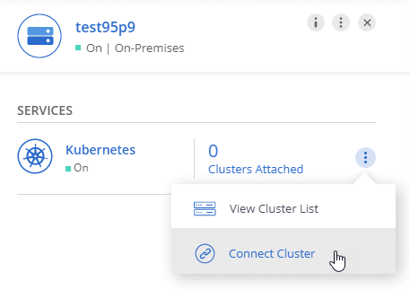

Go to the docs for the latest release.
What’s new in Cloud Manager 3.7
Contributors
 Download PDF of this page
Download PDF of this page
Cloud Manager typically introduces a new release every month to bring you new features, enhancements, and bug fixes.
|
Looking for a previous release? What’s new in 3.6 What’s new in 3.5 What’s new in 3.4 |
Cloud Manager 3.7.5 update (16 Dec 2019)
This update includes the following enhancements:
Cloud Volumes ONTAP 9.7
Cloud Volumes ONTAP 9.7 is now available in AWS, Azure, and Google Cloud Platform.
Cloud Compliance for Cloud Volumes ONTAP
Cloud Compliance is a data privacy and compliance service for Cloud Volumes ONTAP in AWS and Azure. Using Artificial Intelligence (AI) driven technology, Cloud Compliance helps organizations understand data context and identify sensitive data across Cloud Volumes ONTAP systems.
Cloud Compliance is currently available as a Controlled Availability release.
Cloud Manager 3.7.5 (3 Dec 2019)
Cloud Manager 3.7.5 includes the following enhancements.
High write speed for Cloud Volumes ONTAP in GCP
You can now enable high write speed on new and existing Cloud Volumes ONTAP systems in Google Cloud Platform. High write speed is a good choice if fast write performance is required for your workload.
On-prem ONTAP clusters as persistent storage for Kubernetes
Cloud Manager now enables you to use on-premises ONTAP clusters as persistent storage for containers. Similar to Cloud Volumes ONTAP, Cloud Manager automates the deployment of NetApp Trident and the connects ONTAP to Kubernetes clusters.
After adding a Kubernetes cluster to Cloud Manager, you can connect it to your on-premises ONTAP clusters from the Working Environments page:

Latest Trident version for Kubernetes
Cloud Manager now installs a more recent version of Trident (version 19.07.1) when you connect a working environment to a Kubernetes cluster.
Support for Azure general-purpose v2 storage accounts
When you deploy new Cloud Volumes ONTAP systems in Azure, the storage accounts that Cloud Manager creates for diagnostics and data tiering are now general-purpose v2 storage accounts.
Prefixes in Azure storage account names using APIs
You can now add a prefix to the names of the Azure storage accounts that Cloud Manager creates for Cloud Volumes ONTAP. Just use the storageAccountPrefix parameter when you deploy a new Cloud Volumes ONTAP system in Azure.
Cloud Manager 3.7.4 (6 Oct 2019)
Cloud Manager 3.7.4 includes the following enhancements.
Support for Azure NetApp Files
You can now view and create NFS volumes for Azure NetApp Files directly from Cloud Manager. This enhancement continues our goal to help you manage your cloud storage from a single interface.
This feature requires new permissions as shown in the latest Cloud Manager policy for Azure.
"Microsoft.NetApp/netAppAccounts/read",
"Microsoft.NetApp/netAppAccounts/capacityPools/read",
"Microsoft.NetApp/netAppAccounts/capacityPools/volumes/write",
"Microsoft.NetApp/netAppAccounts/capacityPools/volumes/read",
"Microsoft.NetApp/netAppAccounts/capacityPools/volumes/delete"Cloud Volumes ONTAP for GCP enhancements
Cloud Manager 3.7.4 enables the following enhancements to Cloud Volumes ONTAP for Google Cloud Platform:
- Pay-as-you-go subscriptions in the GCP Marketplace
-
You can now pay for Cloud Volumes ONTAP as you go by subscribing to Cloud Volumes ONTAP in the Google Cloud Platform Marketplace.
- Shared VPC
-
Cloud Manager and Cloud Volumes ONTAP are now supported in a Google Cloud Platform shared VPC.
Shared VPC enables you to configure and centrally manage virtual networks across multiple projects. You can set up Shared VPC networks in the host project and deploy the Cloud Manager and Cloud Volumes ONTAP virtual machine instances in a service project. Google Cloud documentation: Shared VPC overview.
- Multiple Google Cloud projects
-
Cloud Volumes ONTAP no longer needs to be in the same project as Cloud Manager. Add the Cloud Manager service account and role to additional projects and then you can choose from those projects you deploy Cloud Volumes ONTAP.

For more details about setting up the Cloud Manager service account, see step 4b on this page.
- Customer-managed encryption keys when using Cloud Manager APIs
-
While Google Cloud Storage always encrypts your data before it’s written to disk, you can use Cloud Manager APIs to create a new Cloud Volumes ONTAP system that uses customer-managed encryption keys. These are keys that you generate and manage in GCP using the Cloud Key Management Service.
Refer to the API Developer Guide for details about using the "GcpEncryption" parameters.
This feature requires new permissions as shown in the latest Cloud Manager policy for GCP:
- cloudkms.cryptoKeyVersions.useToEncrypt - cloudkms.cryptoKeys.get - cloudkms.cryptoKeys.list - cloudkms.keyRings.list
Backup to S3 enhancement
You can now delete the backups for existing volumes. Previously, you could only delete the backups for volumes that had been deleted.
Encryption of boot and root disks in AWS
When you enable data encryption using the AWS Key Management Service (KMS), the boot and root disks for Cloud Volumes ONTAP are now encrypted, as well. This includes the boot disk for the mediator instance in an HA pair. The disks are encrypted using the CMK that you select when you create the working environment.
| Boot and root disks are always encrypted in Azure and Google Cloud Platform because encryption is enabled by default in those cloud providers. |
Support for the AWS Bahrain region
Cloud Manager and Cloud Volumes ONTAP are now supported in the AWS Middle East (Bahrain) region.
Support for the Azure UAE North region
Cloud Manager and Cloud Volumes ONTAP are now supported in the Azure UAE North region.
Cloud Manager 3.7.3 update (15 Sept 2019)
Cloud Manager now enables you to back up data from Cloud Volumes ONTAP to Amazon S3.
Backup to S3
Backup to S3 is an add-on service for Cloud Volumes ONTAP that delivers fully-managed backup and restore capabilities for protection, and long-term archive of your cloud data. Backups are stored in S3 object storage, independent of volume Snapshot copies used for near-term recovery or cloning.
This feature requires an update to the Cloud Manager policy. The following VPC endpoint permissions are now required:
"ec2:DescribeVpcEndpoints",
"ec2:CreateVpcEndpoint",
"ec2:ModifyVpcEndpoint",
"ec2:DeleteVpcEndpoints"Cloud Manager 3.7.3 (11 Sept 2019)
Cloud Manager 3.7.3 includes the following enhancements.
Discovery and management of Cloud Volumes Service for AWS
Cloud Manager now enables you to discover the cloud volumes in your Cloud Volumes Service for AWS subscription. After discovery, you can add additional cloud volumes directly from Cloud Manager. This enhancement provides a single pane of glass from which you can manage your NetApp cloud storage.
New subscription required in the AWS Marketplace
A new subscription is available in the AWS Marketplace. This one-time subscription is required to deploy Cloud Volumes ONTAP 9.6 PAYGO (except for your 30-day free trial system). The subscription also enables us to offer add-on features for Cloud Volumes ONTAP PAYGO and BYOL. You’ll be charged from this subscription for every Cloud Volumes ONTAP PAYGO system that you create and each add-on feature that you enable.
Starting with version 9.6, this new subscription method replaces the two existing AWS Marketplace subscriptions for Cloud Volumes ONTAP PAYGO to which you previously subscribed. You still need subscriptions through the existing AWS Marketplace pages when deploying Cloud Volumes ONTAP BYOL.
Support for AWS GovCloud (US-East)
Cloud Manager and Cloud Volumes ONTAP are now supported in the AWS GovCloud (US-East) region.
General Availability of Cloud Volumes ONTAP in GCP (3 Sept 2019)
Cloud Volumes ONTAP is now generally available in Google Cloud Platform (GCP) when you bring your own license (BYOL). A pay-as-you-go promotion is also available. The promotion offers free licenses for an unlimited number of systems and will expire at the end of September 2019.
Cloud Manager 3.7.2 (5 Aug 2019)
FlexCache licenses
Cloud Manager now generates a FlexCache license for all new Cloud Volumes ONTAP systems. The license includes a 500 GB usage limit.
To generate the license, Cloud Manager needs to access https://ipa-signer.cloudmanager.netapp.com. Make sure that this URL is accessible from your firewall.
Kubernetes storage classes for iSCSI
When you connect Cloud Volumes ONTAP to a Kubernetes cluster, Cloud Manager now creates two additional Kubernetes storage classes that you can use with iSCSI Persistent Volumes:
-
netapp-file-san: For binding iSCSI Persistent Volumes to single-node Cloud Volumes ONTAP systems
-
netapp-file-redundant-san: For binding iSCSI Persistent Volumes to Cloud Volumes ONTAP HA pairs
Management of inodes
Cloud Manager now monitors inode usage on a volume. When 85% of the inodes are used, Cloud Manager increases the size of the volume to increase the number of available inodes. The number of files a volume can contain is determined by how many inodes it has.
| Cloud Manager monitors inode usage only when the Capacity Management Mode is set to automatic (this is the default setting). |
Support for the Hong Kong region in AWS
Cloud Manager and Cloud Volumes ONTAP are now supported in the Asia Pacific (Hong Kong) region in AWS.
Support for the Australia Central regions in Azure
Cloud Manager and Cloud Volumes ONTAP are now supported in the following Azure regions:
-
Australia Central
-
Australia Central 2
Update on backing up and restoring (15 July 2019)
Starting with the 3.7.1 release, Cloud Manager no longer supports downloading a backup and using it to restore your Cloud Manager configuration. You need to follow these steps to restore Cloud Manager.
Cloud Manager 3.7.1 (1 July 2019)
-
This release primarily includes bug fixes.
-
It does include one enhancement: Cloud Manager now installs a NetApp Volume Encryption (NVE) license on each Cloud Volumes ONTAP system that is registered with NetApp Support (both new and existing systems).
-
Setting up NetApp Volume Encryption
Cloud Manager does not install the NVE license on systems that reside in the China region.
Cloud Manager 3.7 update (16 June 2019)
Cloud Volumes ONTAP 9.6 is now available in AWS, Azure, and in Google Cloud Platform as a private preview. To join the private preview, send a request to ng-Cloud-Volume-ONTAP-preview@netapp.com.
Cloud Manager 3.7 (5 June 2019)
Support for upcoming Cloud Volumes ONTAP 9.6 release
Cloud Manager 3.7 includes support for the upcoming Cloud Volumes ONTAP 9.6 release. The 9.6 release includes a private preview of Cloud Volumes ONTAP in Google Cloud Platform. We’ll update the release notes when 9.6 is available.
NetApp Cloud Central accounts
We’ve enhanced how you manage your cloud resources. Each Cloud Manager system will be associated with a NetApp Cloud Central account. The account enables multi-tenancy and is planned for other NetApp cloud data services in the future.
In Cloud Manager, a Cloud Central account is a container for your Cloud Manager systems and the workspaces in which users deploy Cloud Volumes ONTAP.
| Cloud Manager needs access to https://cloudmanager.cloud.netapp.com in order to connect to the Cloud Central account service. Open this URL on your firewall to ensure that Cloud Manager can contact the service. |
Integrating your system with Cloud Central accounts
Some time after you upgrade to Cloud Manager 3.7, NetApp will choose specific Cloud Manager systems to integrate with Cloud Central accounts. During this process, NetApp creates an account, assigns new roles to each user, creates workspaces, and places existing working environments in those workspaces. There’s no disruption to your Cloud Volumes ONTAP systems.
Backup and restore with the Cloud Backup Service
The NetApp Cloud Backup Service for Cloud Volumes ONTAP delivers fully-managed backup and restore capabilities for protection and long-term archive of your cloud data. You can integrate the Cloud Backup Service with Cloud Volumes ONTAP for AWS. Backups created by the service are stored in AWS S3 object storage.
To get started, install and configure the backup agent and then start backup and restore operations. If you need help, we encourage you to contact us by using the chat icon in Cloud Manager.
| This manual process is no longer supported. The Backup to S3 feature was integrated into Cloud Manager in the 3.7.3 release. |
 Edit on GitHub
Edit on GitHub